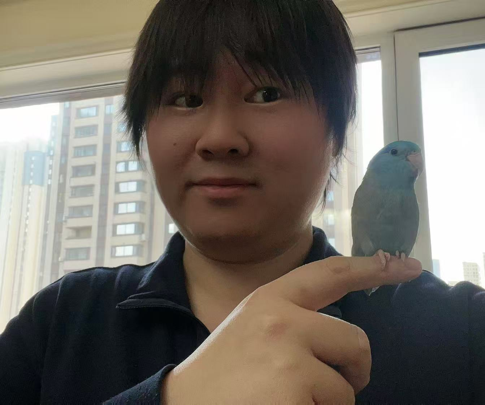

Xiaosheng Yu 于晓升
🧑🔬 I am an Associate Professor at the Faculty of Robot Science and Engineering, Northeastern University, China.
🎓 I received my Ph.D. in Pattern Recognition and Intelligent Systems from Northeastern University. I was also a postdoctoral researcher in Computer Science and Engineering at Northeastern University.
🔍 My research interests include visual saliency detection, novel view synthesis, remote sensing segmentation and large model compression.

Photo
👨🏫 Biography
Xiaosheng Yu received the PhD degree from Northeastern University in 2014. He is currently an associate professor with the Faculty of Robot Science and Engineering, Northeastern University. His research interests include visual saliency detection, novel view synthesis, remote sensing segmentation and large model compression.
🎓 Education
- Postdoctoral Researcher, Computer Science and Engineering, Northeastern University, 2014.05-2017.05
- Ph.D., Pattern Recognition and Intelligent Systems, Northeastern University, 2009.09-2014.05
- M.Sc., Mechanical Systems Engineering, University of Liverpool, 2006.09-2007.12
💼 Academic Appointments
- Associate Professor, Faculty of Robot Science and Engineering, Northeastern University, 2022.01-Present
- Lecturer, Faculty of Robot Science and Engineering, Northeastern University, 2017.06-2021.12
🔍 Research Interests
📄 Representative Publications
Chen J, Xiaosheng Yu, Jiang Z, et al.
Information Fusion 2026 Information Fusion: 103889.
Tang Y, Xiaosheng Yu, Zhang Y, et al.
GRSL 2026 IEEE Geoscience and Remote Sensing Letters.
Xiaosheng Yu, Huang J, Wang Y, et al.
TVC 2026 The Visual Computer, 42(2): 141.
Lyu P, Xiaosheng Yu, Chi J, et al.
TIP 2025 IEEE Transactions on Image Processing, 34: 2796-2810.
Xiaosheng Yu, Cheng X, Liu Y, et al.
TCE 2025 IEEE Transactions on Consumer Electronics, 71(1): 883-894.
Chen J, Xiaosheng Yu, Tang Y, et al.
TCE 2025 IEEE Transactions on Consumer Electronics, 71(4): 11791-11800.
Xiaosheng Yu, Bai W, Chen J, et al.
GRSL 2025 IEEE Geoscience and Remote Sensing Letters, 22: 2506205.
Xiaosheng Yu, Tian X, Chen J, et al.
C&G 2025 Computers & Graphics, 127: 104171.
Bai M, Xiaosheng Yu.
CEE 2025 Computers and Electrical Engineering, 123: 110038.
Bai M, Xiaosheng Yu, Wang Y, et al.
TVC 2025 The Visual Computer, 41(8): 5625-5641.
Wang S, Xiaosheng Yu, Wu H, et al.
MBEC 2025 Medical & Biological Engineering & Computing, 63(4): 1161-1176.
Chen J, Xiaosheng Yu, Wu C, et al.
ASOC 2024 Applied Soft Computing, 167: 112262.
Xiaosheng Yu, Pang Y, Chi J, et al.
TVC 2024 The Visual Computer, 40(6): 4337-4354.
Lei X, Xiaosheng Yu, Bai M, et al.
IJIST 2024 International Journal of Imaging Systems and Technology, 34(5): e23177.
Wang S, Xiaosheng Yu, Jia W, et al.
MBEC 2023 Medical & Biological Engineering & Computing, 61(12): 3319-3333.
Wang Y, Xiaosheng Yu, Wu C.
JDI 2022 Journal of Digital Imaging, 35(3): 638-653.
Lei X, Xiaosheng Yu, Chi J, et al.
ESWA 2021 Expert Systems With Applications, 168: 114262.
Pang Y, Xiaosheng Yu, Wang Y, et al.
JVCIR 2019 Journal of Visual Communication and Image Representation, 65: 102676.